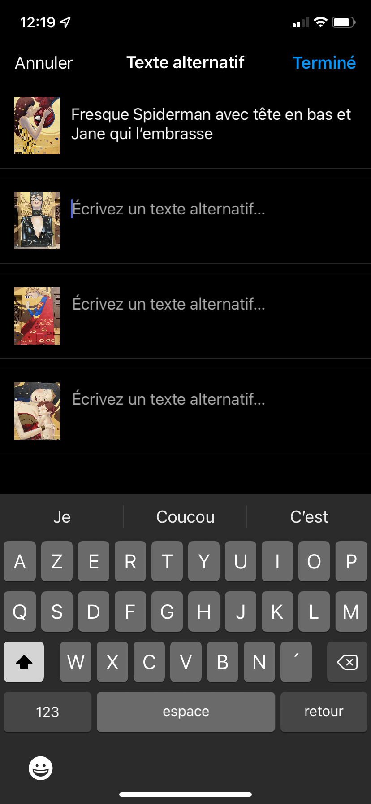
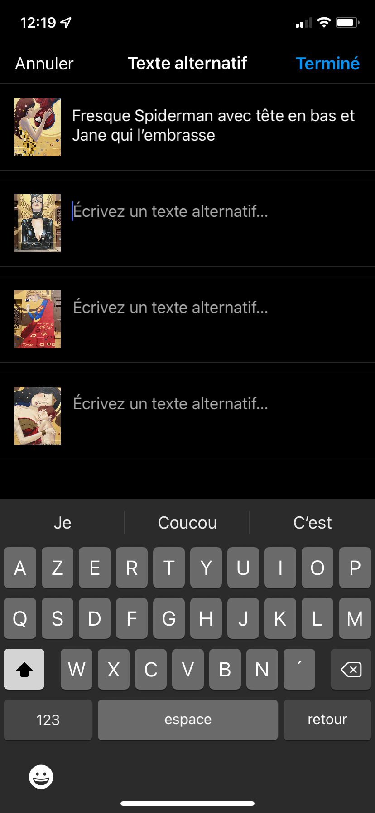

Comment rendre les supports multimédias accessibles à tous ?

Emmanuelle ABOAF
Eqal – 26 juillet 2022
Description des images (1/2)
Cliquer sur le bouton "ALT"
Ecrire un texte alternatif
Activer l’option « activer le rappel de la description de l’image »
Description des images (2/2)

 

WordPress
Tiens, WordPress affiche désormais un message sous le champ «Texte alternatif de l’image», avec un lien menant à ce tutoriel de la WAI : https://t.co/VnRQoAMJq3 Un rappel toujours utile ! 😉 #a11y #WordPress
— Marie (@kReEsTaL) 10 mai 2019
Ce qu'il ne faut surtout pas faire
˙uıɐɯǝp '3 sƃuıɥʇ ɹǝƃuɐɹʇs
— Netflix France (@NetflixFR) 3 juillet 2019
Ce que dit le lecteur d'écran : « U P 3 siuz »
Transcription du tweet de Netflix France :
« Stranger things 3, demain. »
Reminder that cute "fonts" on Twitter make your tweets useless to those using screen readers. For example, "𝗛𝗲𝗹𝗹𝗼" (bold) may sound like this: "Mathematical bold sans H, Mathematical bold sans E, Mathematical bold sans L, Mathematical bold sans L, Mathematical bold sans O"
— Jennifer (@GeneticJen) 19 juin 2019
Vous trouvez ça 𝓶𝓲𝓰𝓷𝓸𝓷 d'écrire vos tweets et 🅿🆂🅴🆄🅳🅾 comme ça. Mais avez-vous déjà ⓔⓝⓣⓔⓝⓓⓤ ce que ça d⃣ o⃣ n⃣ n⃣ e⃣ avec des technologies d'assistance comme VσιƈҽOʋҽɾ ?
— HTeuMeuLeu (@HTeuMeuLeu) 30 août 2019
Ce que dit le lecteur d'écran :
« Vous trouvez ça m de ronde lettre i de ronde lettre g de ronde lettre n de ronde lettre o de ronde lettre n de ronde lettre d'écrire vos tweets et symbole de parking groupe sanguin O comme ça. Mais avez-vous déjà latin small letter e latin small letter n latin small letter tlatin small letter elatin small letter nlatin small letter dlatin small letter u ce que ça D O N N E avec des technologies d'assistance comme sigmeodao ? »
Transcription du tweet de HTeuMeuLeu :
« Vous trouvez ça mignon d'écrire vos tweets et pseudo comme ça. Mais avez-vous déjà entendu ce que ça donne avec des technologies comme Voice Over ? »